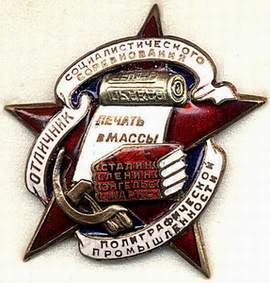

Сразу оговорюсь, что данная статья — несколько запоздалая реакция на опрос, проведённый мной более двух лет назад в четырёх студенческих группах г. Ставрополя, трёх — в СГУ (две — филологический факультет, одна — географический) и одной — в Институте управления. Всего сто девять человек. Опрашиваемым был предложен тогда всего один вопрос: «Назовите величайшую, по вашему мнению, за всю историю человечеста книгу». Не скрою, что опрос я проводил с целью написать по его результатам заметку в эту самую рубрику этой самой газеты, но результаты опроса… Результаты оказались настолько шокирующими, что я разнервничался, закинул листочки с ответами в папку со всяким хламом и через некоторое время забыл об этом опросе, как о страшном сне.
Но недавно перебирал бумаги и, наткнувшись на стопку ответов будущих учителей и муниципальных служащих на свой вопрос о величайшей книге человечества, решил-таки не только очередной раз выматериться про себя, но и сказать пару слов публично.
Итак…
Абсолютным рекордсменом (67 голосов из ста девяти) в списке кандидатов на величайшую книгу оказался роман Михаила Булгакова «Мастер и Маргарита». Вы ещё не упали? Тогда держитесь. На втором месте (19 голосов) — роман Александра Дюма (вам не показалось — тут действительно написано именно то, что вы прочитали) «Королева Марго».
Товарищи, напоминаю вам, что опрос проводился не в детском саду и не в школе для детей с отставанием в развитии… Да, я не давал, предлагая свой вопрос, никаких критериев для определения величия той или иной книги, но сделал это намеренно: хотел попытаться выяснить, чем будут руководствоваться опрашиваемые. Наиболее вероятным мне казался подход, при котором, определяя величие текста, следует прикинуть, какую роль сыграл (или должен ещё сыграть) этот текст в истории человечества или, как минимум, в истории литературы. Безусловно, я делал предположения, а именно — мне казалось, что в списке обязательно должны оказаться Евангелие, Коран, «Манифест коммунистической партии», Бхагавад-Гита, «Майн Кампф», что-нибудь из Ницше, Кейнс, «Илиада» или, на худой конец, какой-нибудь Достоевский… Фи-гу-шки… Из книг, реально повлиявших на умы человечества или, по меньшей мере, метко отразивших такие глобальные изменения (по личному моему, понятное дело, мнению), в листочках были упомянуты лишь «Введение в психоанализ» Фрейда (1 — sic! — голос) и джойсовский «Улисс» (3 голоса). И никаких вам библий, никаких конституций Соединённых Штатов Америки, даже многократно побеждавший на всякоразных европейских опросах Толкин со своими милыми сказками остался неупомянутым. Толкину, впрочем, туда и дорога. Можно как-то попытаться понять то, что четыре человека назвали «Лолиту» Набокова, но окончательно меня добил один листочек, на котором было аккуратно выведено следующее: «О. Газманов. Офицеры (песня)». Любого нормального человека на этом месте должно было в обязательном порядке стошнить. Эта отвратительная наглая бездарная халтура, безусловно, не имеет никакого отношения и к песням, но назвать её величайшей книгой человечества… Очень хочется надеяться, что отвечавший просто глупо пошутил.
Два человека назвали «Унесённые ветром», один — «Скарлетт», один написал только фамилию — Крапивин…
Вы понимаете? Эти люди просто не читают книг. Они читают чтиво. И то, судя по ответу с Газмановым, не все. А ещё, вероятно, не ошибусь, если скажу, что критерий для определения понятия «величайший» у абсолютного большинства опрошенных очень простой — «мне нравится». Мне нравится — значит, величайший. Всё. Без разговоров. Никакого исторического видения, эгоцентризм один… Да и тот какой-то неглубокий, сиюсекундный…
Какие ещё выводы напрашиваются? А вот: «Мастер и Маргарита» и «Королева Марго» — это уровень нашей современной высшей школы. Даже язык не поворачивается называть её после этого высшей… так — серенькая серединка, узенький тесный мирок, не ведающий ни глубины, ни широты, ни страсти, ни мудрости. Особенно поражает единодушие (вернее, наверное, неразнообразие); именно из такой вот среды, мне кажется, и выходят всякие «Идущие вместе» с их убогой гитлеръюгендовской программой и идеологией… Дети, блин, подростки! Читайте больше, а то такими же вырастете и даже сами понять не сможете, почему это нехорошо: нечем будет. И ещё: не видевший океана может и лужу считать огромной… А дальше сами.
